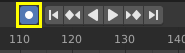

时间线¶
时间线 编辑器由时钟图标标识，用于操作关键帧和擦除播放头。

时间线。¶
时间线 通过显示当前帧，活动对象的关键帧，动画序列的开始和结束帧以及用户设置的标记，为用户提供场景动画的全面概览。
时间线 包括 传输控制 ，用于播放，暂停和跳过动画序列。
它还包括用于操作 关键帧， 键控集 和 标记 的工具。
主视图¶
主 时间线 区域随时间显示动画帧。
在这里你可以看到 关键帧 (菱形)， 播放头 (蓝色手柄)， 滚动条 (沿着底部).
调整视图¶
可以通过按住 MMB ，然后向左或向右拖动区域来平移 时间线 。
您可以使用以下命令缩放 时间线 Ctrl-MMB , 鼠标 Wheel , 或者按 NumpadMinus 和 NumpadPlus .
您还可以使用位于编辑器底部或右侧的滚动条来平移和缩放视图。
播放头¶
播放头 是蓝色垂直线，顶部是当前帧编号。

播放头。¶
通过在时间线顶部的擦洗区域按住或按住 LMB， 可以将 时间指针 设置或移动到新位置。
播放头 可以按 Left 或 Right 以单帧增量移动,或者可以通过按 Shift-Left 或 Shift-Right 跳转到开始或结束帧。
帧范围¶
默认情况下, 帧范围 设置为从帧 1 开始,在帧 250 处结束。您可以更改时间线标题右上角或"输出属性"中的帧范围。
关键帧¶
对于活动对象和选定对象,关键帧显示为菱形。
您可以单击以一次选择一个,或者通过按住 Shift, 或拖动关键帧周围的框来选择多个。然后,您可以通过拖动单个键来移动单个键,并且可以通过按 G 移动多个键,然后用 S 缩放它们。
只能启用 选定的频道. 。对于 骨架, 这将显示对象关键帧.以及活动和选定姿势骨骼的关键帧。
标题¶
菜单¶
回放弹出¶
回放 弹出窗口包含控制动画播放的选项。
- 同步模式

3D Viewport red FPS.¶
When you play an animation, the frame rate is displayed at the top left of the 3D Viewport. If the scene is detailed and playback is slower than the set Frame Rate (see 尺寸面板), these options are used to synchronize the playback.
- 不同步
不同步, 播放每一帧。
- 帧优化
如果播放太慢则丢帧。
- 音视频同步
(音频/视频同步)。同步到音频时钟，如果播放速度慢，则会丢掉部分帧，用于优化播放。
- 音频清理
如果您的动画有声音，则此选项会在您使用 LMB 或键盘箭头(如移动播放头)移动播放头时播放声波的一些部分。
- 静音
将任何音频源的声音静音。
- 子帧
Display and allow changing the current scene subframe.
- Limit Playback to Frame Range
不允许使用鼠标选择播放范围之外的帧。
- Follow Current Frame
Animation editors can be setup to always follow the time indicator as animation is being played back. Following will be done when animating and changing frame: When the cursor reaches the end of the screen, the next range of frames of the same width will be displayed.
- 仅限主动编辑器
播放时，如果禁用 动画编辑器 和 所有3D视口 ，则更新时间线。
- 所有3D视口
While playing, updates the 3D Viewport and the Timeline.
- 动画编辑
播放时，更新时间线，摄影表，图形编辑器，视频序列器。
- 属性编辑器
当动画播放时，这将更新UI中的属性值。
- 图像编辑器
掩码模式下的图像编辑器。
- 序列编辑器
播放时，更新视频序列器。
- 节点编辑器
播放时，更新节点编辑器的节点属性。
- 影片剪辑编辑器
播放时更新影片剪辑编辑器。
键控弹出¶

Keying 弹出包含影响关键帧插入的选项。
- 活动插帧集

时间线插帧集。¶
插帧集 是一组关键帧通道。它们是用于用户可以同时记录多个属性。选择关键帧组合后，当你插入关键帧时，Blender将为活动 插帧集 中的属性添加关键帧。有一些内置的关键帧组合，LocRotScale 以及自定义关键帧组合。可以在面板中定义自定义插帧集设置 。
- 插入关键帧(加号图标)
在当前帧插入当前关键帧组所中包含属性的关键帧。
- 插入关键帧(减号图标)
在当前帧删除当前关键帧组所中包含属性的关键帧。
- 新建关键帧类型
插入时 关键帧类型 .
- 自动插入关键帧模式
控制自动插入关键帧模式的运行。每个时刻只能用一种模式。
- 添加&替换
添加或者替换已有关键帧。
- 替换
仅替换已有的关键帧。
- 自动键控设置(两个键图标)
启用 自动关键帧 时将为活动 插帧集 中的属性自动插入新的关键帧。
- 分层录音
为动画上的每个循环/通道添加一个新的非线性动画追踪和Strip，以便进行无损调整。
- 循环感知键控
当将关键帧插入 trivially cyclic curves 时，应用特殊处理来保持循环完整性(在调整已建立的循环时最有用)：
如果在循环的主时间范围之外尝试键插入，则将其重新映射回范围内。
当覆盖其中一个结束键时，另一个正确更新。
菜单¶
标记菜单¶
Markers 用于表示动画中具有关键点或重要事件的帧。 与大多数动画编辑器一样，标记显示在编辑器的底部。

动画编辑器中的标记。¶
有关不同标记工具的说明，请参阅 Editing Markers.
标题栏控制按钮¶
标题栏控件。

播放控制¶
这些按钮用于设置，播放，回放播放头。

传输控制。¶
- Jump to Start (❙⏴) Shift-Left
这将时间指针设置为帧范围的开始。
- Jump to Previous Keyframe (◆⏴) Down
这将时间指针设置为上一关键帧。
- 倒放 (◀) Shift-Ctrl-Spacebar
这在反向播放动画序列。播放播放按钮时切换到暂停按钮。
- 播放 (▶) Spacebar
这将播放动画序列。播放播放按钮时，切换到暂停按钮。
- Jump to Next Keyframe (⏵◆) Up
这将光标设置为下一个关键帧。
- Jump to End (⏵❙) Shift-Right
这将光标设置为下一个关键帧。
- 暂停 (⏸) Spacebar
这将停止动画。
帧控制¶
- 当前帧 Alt-Wheel
动画/播放范围的当前帧。 也是 播放头 的位置。
- 预览范围(时钟图标)
这是一个临时帧范围，用于预览整个范围的较小部分。 预览范围仅影响视口，而不影响渲染输出。 请参阅 预览范围.
- 起始帧
动画 / 播放范围的起始帧。
- 结束帧
动画 / 播放范围的结束帧。
关键帧控制¶
- Auto Keyframe (⏺)
- 
时间线自动关键帧。¶
The record button enables Auto Keyframe: It will add and/or replace existing keyframes for the active object when you transform it in the 3D Viewport. For example, when enabled, first set the Playhead to the desired frame, then move an object in the 3D Viewport, or set a new value for a property in the UI.
When you set a new value for the properties, Blender will add keyframes on the current frame for the transform properties. Other use cases are Fly/Walk Navigation to record the walk/flight path and Lock Camera to View to record the navigation in camera view.
Note
Note that Auto Keyframe only works for transform properties (objects and bones), in the 3D Viewport (i.e. you can't use it e.g. to animate the colors of a material in the Properties...).